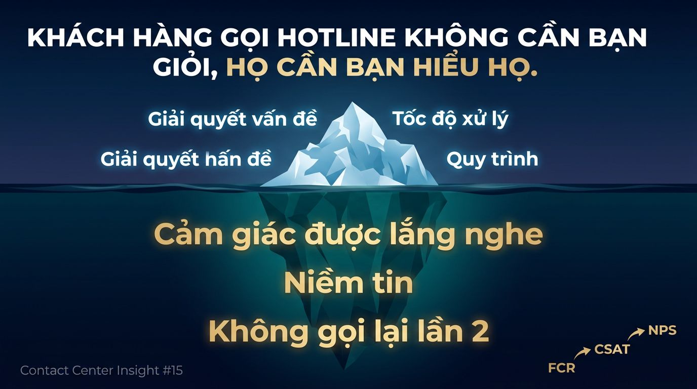

Trang chủ › Blog › Contact Center Insights · Mùa 1
CRM, Omnichannel và trải nghiệm
Điều gì khiến khách hàng hài lòng nhất khi gọi hotline?
Chúng ta đã cùng nhau đi qua 14 kỳ của series này.
Từ sự khác biệt giữa Call Center và Contact Center. Đến KPI, CRM, Omnichannel, Voicebot AI.
Hôm nay em muốn dừng lại ở một câu hỏi tưởng đơn giản — nhưng câu trả lời khiến nhiều nhà quản lý phải nhìn lại toàn bộ hệ thống của mình:
"Điều gì thực sự khiến khách hàng hài lòng sau một cuộc gọi hotline?"
Em từng được nghe chia sẻ từ một nhóm khách hàng ngân hàng về câu hỏi này.
Ai cũng chờ đợi những câu trả lời quen thuộc: "Giải quyết được vấn đề." "Agent chuyên nghiệp." "Không phải chờ lâu."
Câu xuất hiện nhiều nhất lại là:
"Cảm giác được lắng nghe."
Không phải tốc độ. Không phải quy trình. Không phải công nghệ.
Là cảm giác.
Và đây là điều mà hầu hết Contact Center đang bỏ qua trong khi tối ưu hàng chục KPI mỗi ngày. Chúng ta đo AHT. Đo tỷ lệ bắt máy. Đo thời gian chờ. Nhưng cảm giác của khách hàng sau khi cúp máy — thứ quyết định họ có quay lại hay không — lại hiếm khi được đặt lên bàn cân.
Nhiều anh/chị quản lý vẫn tin: "Chỉ cần giải quyết xong vấn đề, khách hàng sẽ hài lòng." Thực tế, dữ liệu CX cho thấy: Đó mới chỉ là phần nổi của tảng băng.

Nghiên cứu về Customer Experience chỉ ra 3 yếu tố khiến khách hàng thực sự hài lòng sau một cuộc gọi. Không phải 10. Không phải 20. Chỉ 3.
Yếu tố #1 — Được lắng nghe thực sự.
Không phải nghe cho xong để chuyển sang bước tiếp theo trong script.
Mà là agent thực sự hiểu khách hàng đang nói gì — và thể hiện sự đồng cảm trước khi đưa ra giải pháp.
Sự khác biệt giữa hai câu nói này:
- ❌ "Dạ em ghi nhận. Anh/chị cho em xin số tài khoản ạ."
- ✅ "Em hiểu việc này khiến anh/chị lo lắng. Để em kiểm tra ngay và giải thích rõ cho mình nhé."
Cùng một thông tin được xử lý. Nhưng trải nghiệm cảm xúc hoàn toàn khác nhau.
Trong ngành BFSI — nơi khách hàng thường gọi vào đúng lúc họ đang căng thẳng nhất với tiền bạc — câu nói "Em hiểu sự lo lắng của anh/chị lúc này" có giá trị hơn bất kỳ kịch bản cứng nhắc nào.
Đồng cảm không phải kỹ năng mềm. Đó là vũ khí cạnh tranh.
Yếu tố #2 — Được giải quyết nhanh, không bị "đá bóng".
Không có gì bào mòn sự kiên nhẫn của khách hàng nhanh hơn câu:
"Dạ vấn đề này bên em không xử lý được, anh/chị vui lòng giữ máy để em chuyển sang bộ phận khác ạ."
Rồi chờ. Rồi kể lại từ đầu. Rồi chờ tiếp.
Khách hàng không muốn hiểu cơ cấu tổ chức của mình. Họ chỉ muốn vấn đề của họ biến mất — càng ít điểm chuyển tiếp càng tốt.
Theo quan sát của em, Contact Center thực sự mạnh là nơi agent được trao quyền xử lý đủ rộng và trang bị đủ thông tin để không phải chuyển máy mỗi khi gặp tình huống phức tạp một chút.
Mỗi lần chuyển máy không chỉ là sự bất tiện — đó là "cái bẫy" khiến khách hàng mất tin tưởng vào thương hiệu.
Yếu tố #3 — Không phải gọi lại lần thứ hai.
Đây là yếu tố có tác động lớn nhất đến sự hài lòng — nhưng cũng là thứ khó đo lường nhất nếu anh/chị chỉ nhìn vào dashboard nội bộ.
Khi khách hàng phải gọi lại, họ không chỉ tốn thêm thời gian.
Họ mất đi niềm tin rằng vấn đề của mình quan trọng với mình.
Và đây là lúc KPI quan trọng nhất xuất hiện — thứ em đã đề cập từ bài #3 trong series này:
FCR — First Call Resolution. KPI "Vua" của Contact Center.
Mối quan hệ gần như tuyến tính từ dữ liệu thực tế:
- → FCR tăng → CSAT tăng: Xóa bỏ hoàn toàn nỗ lực không cần thiết của khách hàng
- → FCR tăng → Chi phí giảm: Mỗi cuộc gọi lại là một khoản chi phí vận hành tăng thêm
- → FCR tăng → NPS cải thiện: Khách hàng không cần gọi lại, họ có lý do để giới thiệu thương hiệu
FCR không chỉ là KPI vận hành. Đó là chỉ số sức khỏe của toàn bộ trải nghiệm khách hàng.
Vậy làm thế nào để cải thiện cả 3 yếu tố cùng lúc?
Nếu anh/chị đã theo dõi series từ bài #12, sẽ nhận ra chúng ta đang khép lại một vòng tròn:
#12 — CRM: Agent thấy đủ thông tin trước khi nói câu đầu tiên → có "khoảng trống" để lắng nghe thay vì vừa nghe vừa gõ tìm kiếm trên 3 màn hình.
#13 & #14 — Omnichannel: Dữ liệu chảy liền mạch → agent không cần hỏi lại, không cần chuyển máy vì thiếu thông tin.
#15 — FCR: Khi CRM + Omnichannel + Agent Assist AI hội tụ → agent lắng nghe tốt hơn, giải quyết nhanh hơn, giải quyết đúng ngay lần đầu.
Đây chính xác là kiến trúc mà OmiCX của Minh Phúc Transformation được xây dựng để hiện thực hóa — không phải từng mảnh rời rạc, mà là một hệ sinh thái vận hành đồng bộ.
Khi agent không phải tra cứu → họ tập trung lắng nghe.
Khi dữ liệu không bị đứt gãy → họ giải quyết không cần chuyển máy.
Khi AI gợi ý realtime → họ giải quyết đúng ngay lần đầu.
FCR cao không phải may mắn. Đó là kết quả của một hệ thống được thiết kế đúng.
Dù công nghệ có thay đổi ra sao — AI, Voicebot, Automation — FCR vẫn luôn là thước đo cao nhất cho năng lực phục vụ của một Contact Center.
Vì cuối cùng, khách hàng không mong anh/chị hoàn hảo.
Họ chỉ mong không phải gọi lại lần thứ hai.
Theo kinh nghiệm của anh/chị — "vật cản" lớn nhất khiến FCR chưa đạt kỳ vọng tại doanh nghiệp mình là gì?
- ⚙️ Quy trình nội bộ quá phức tạp — agent không được trao quyền xử lý
- 📊 Công nghệ cũ, dữ liệu rời rạc — agent không thấy được toàn bộ lịch sử khách hàng
- 🎯 Năng lực xử lý tình huống của agent còn hạn chế — thiếu training thực chiến
- 🔄 Cả ba — đang gặp phải cùng lúc
Hãy để lại comment để mình cùng nhau thảo luận nhé anh chị.